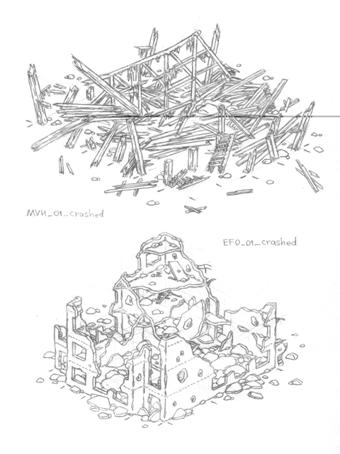

Graphics
Assets
Management
By Alexander Valencia
26 мая 2003
Все
здания и сооружения 3-х мерные, с добавлением дополнительных текстур побитости и
разрушения. Побитость общая на весь
дом. Место попадания снаряда в дом отыгрывается отдельно накладываниаем
маленькой текстуры «попадания» типа «тёмного пятна» . Текстуры побитости
уникальны для каждого дома, текстуры попадания – общие
для всех домов.
Для
каменных домов разрушение осуществляется постепенно: при обстреле накладываются
три дополнительные фазы побитости и разрушения, при полном крушении дома
происходит эффект взрыва, и дом оседает, поднимая клубы пыли J:\Versions\Milestones\2003-06-09-Preproduction\Art\Stone_build_crash\stone_b_crash.exe.
При разрушении деревянных домов также накладываются три фазы разрушения (пробоины на крыше, стенах, вываливание окон и дверей), при полном крушении происходит изменение геометрии дома, т.е. крыша рушится отдельно от стен, меняя направление падения, эффектно сгорая в языках пламени J:\Versions\Milestones\2003-06-09-Preproduction\Art\Build_wood_crush\Wood_build_crach_3stages.exe.
Глиняные дома рушатся аналогично каменным.
Попадания в дом отыгрываются более точно, чем в первом блицкриге, где все выстрелы «попадали» в «одну точку».
Смена фаз разрушения поддерживается патикл-эффектами как-то горение, дымы, осколки стёкол и проч.
Возможно поддерживать смену фаз разрушения анимациями отдельных объектов, типа выпадающих из окон пехотинцев, отрывающихся ставен и проч.

Для некоторых миссий решено добавить уникальные здания и сооружения, например для Юго-Восточной Азии – пагоду, для прибрежных миссий – маяки и прибрежные постройки.